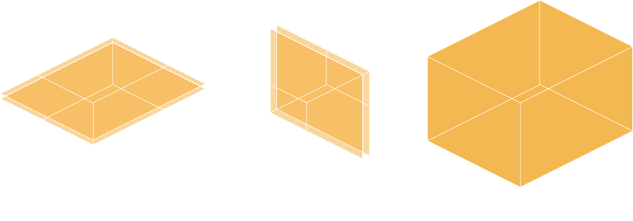
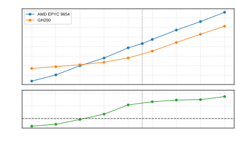
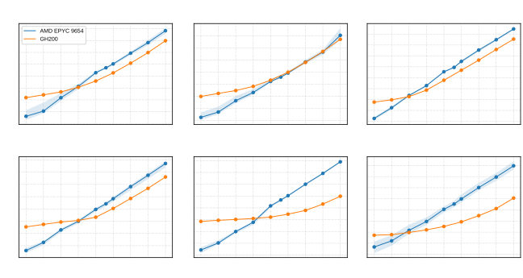
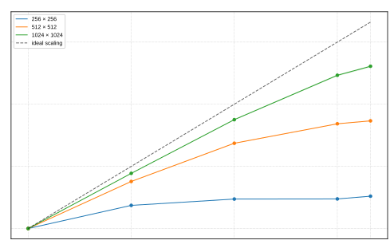

MOM6 dev call
| Layered | Horizontal work over vertically stacked layers |
| Columnar | Ordered vertical work over independent columns |
| Mixed | Layered phases, vertical sums, reductions, communication |
Different solvers require different strategies

| Compiler view | Smaller, regular kernels are easier to map efficiently |
| CPU view | Preserve locality and familiar j-k-i traversal where
useful |
| GPU view | Expose larger horizontal work units without changing algorithms |
| Model view | Keep solver control flow in ordinary Fortran |
do jsb=js,je,njb ; do isb=is,ie,nib
ieb = min(isb + nib - 1, ie)
jeb = min(jsb + njb - 1, je)
iie = ieb - isb + 1
jje = jeb - jsb + 1
do concurrent (k=1:nz, jj=1:jje, ii=1:iie)
i = isb + ii - 1
j = jsb + jj - 1
visc_rem(ii,jj,k) = visc_rem_u(i,j,k)
enddo
enddo ; enddoOuter loops decompose the domain
Inner loops define the kernel
| Kernels | -> | Fortran do concurrent expresses independent
iterations |
| Residency | -> | OpenMP keeps arrays and control structures on device |
| Ordering | -> | Vertical dependencies and reductions remain explicit |
| Geometry | -> | Runtime blocks expose CPU- and GPU-suitable work units |
| Source control | Solver logic remains recognizable Fortran |
| Data locality | Block-local arrays reduce global working set pressure |
| Concurrency | Horizontal work is exposed at a GPU-friendly granularity |
| Tunability | nib and njb can be chosen per build,
platform, or solver |
do concurrent defines computation, but not where data
live.
!$omp target enter data map(to: CS)
!$omp target enter data map(to: CS%u)
!$omp target enter data map(to: CS%v)
do concurrent (k=1:nk, j=1:nj, i=1:ni)
u(i,j,k) = u(i,j,k) + dt * du(i,j,k)
enddoPersistent fields and control structures stay device-resident across many kernels in a timestep.
GPU execution must respect MOM6 regression practice.
| Ordered vertical work | Keep k loops serial where the algorithm requires
it |
| Reductions | Use reproducible accumulation patterns |
| Floating point | Disable transformations such as unwanted FMA contraction when needed |
| CPU path | GPU-enabled source must not regress CPU performance |



The same data-resident implementation extends across MPI ranks, with scaling limited by fixed local work and the available GPU communication path.
The block implementation is the bridge between portable source and usable GPU geometry.
| Fortran | Express independent work with do concurrent |
| OpenMP | Manage data lifetime and movement explicitly |
| Blocks | Tune locality and concurrency without forking the solver |
| Validation | Preserve operational answers while adding accelerator performance |